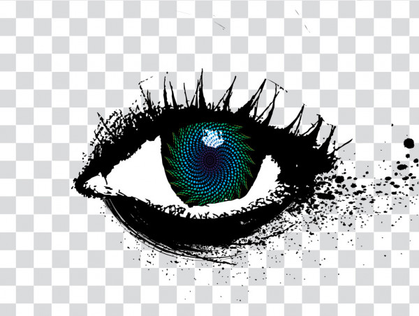

Primera Imagen

Teemo es una leyenda entre sus hermanos y hermanas yordle en Bandle City.
En lo que respecta a los yordles, hay algo un poco extraño en él. Mientras
Teemo disfruta de la compañía de otros yordles, también insiste en frecuentes
misiones en solitario en la defensa en curso de Bandle City. A pesar de su
personalidad genuinamente cálida, algo se apaga dentro de la mente de Teemo
durante el combate para que las vidas que debe terminar mientras patrulla no
lo agobien. Incluso cuando era un joven recluta, los instructores de taladro
y otros aprendices encontraron un poco desconcertante que, mientras Teemo era
normalmente encantador y amable, se volvió extremadamente serio y altamente
eficiente en el momento en que comenzaron los ejercicios de combate. Los
superiores de Teemo lo condujeron rápidamente hacia los Scouts of the Mothership,
que es una de las unidades de Fuerzas Especiales más distinguidas de Bandle
City junto con los Comandos Megling.
- Colombia
- Ecuador
- Argentina
- Italia
- Afganistán
- Albania
- Alemania
- Andorra
Segunda imagen

Círculo brillante de iluminación púrpura aislado sobre fondo oscuro
- Angola
- Arabia Saudita
- Antigua y Barbuda
- Argelia
- Australia
- Austria
- Bahamas
- Bangladés
Tercera imagen

El universo visto a travez de los ojos
- Barbados
- Bélgica
- Bielorrusia
- Birmania
- Bolivia
- Bosnia
- Brasil
- Bulgaria
Cuarta imagen

El dinosaurio lindo lindo de color verde
- Barbados
- Bélgica
- Bielorrusia
- Birmania
- Bolivia
- Bosnia
- Brasil
- Bulgaria